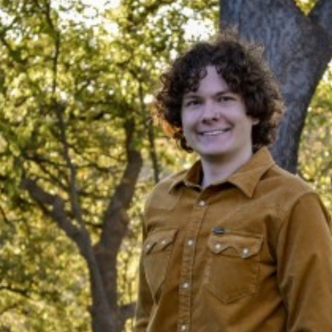

John T. Robertson is a PhD student in Electrical and Computer Engineering at the University of Texas at Austin, co-advised by Haris Vikalo and Atlas Wang. His research focuses on the reliability and controllability of large language models, spanning mechanistic interpretability, activation steering, and the longitudinal evaluation of deployed agents. He is currently first-authoring work on the geometry of activation steering and contributing to a benchmark for long-lived agent reliability, both under review at NeurIPS 2026. John has a multi-disciplinary history of work. During his undergraduate degree, he developed transformer-based methods for detecting tumor-causing viral DNA, published in the Journal of Computational Biology and PLOS Computational Biology. He additionally has several patents pending from his time at Texas Instruments' Kilby Labs implementing efficient vision networks on low-end devices, and a second-place submission to the ICASSP SAND challenge for diagnosing ALS severity from audio data. His work is supported by the Charles W. and Margaret A. Tolbert Endowed Fellowship, Amazon Web Services, and the Texas Advanced Computing Center.
Short Abstract: Reliable use of large language models requires both controlling their behavior and trusting that behavior over time; this talk will discuss approaches to each. Activation steering is an appealingly lightweight way to control a model without retraining, but its effectiveness varies sharply across concepts. Prior work often reads this as evidence that some concepts cannot be captured by one direction. I argue that much of this variability is instead search difficulty: a useful rank-1 intervention usually exists, but finding the right layer and coefficient is expensive. I show that the directional alignment of contrastive activations at the prompt boundary predicts where effective interventions emerge, turning steering into a budget-constrained search that geometry-guided optimization solves with roughly 40% fewer evaluations across three model families. I introduce concept granularity, a measure of how much the locally agreed-upon steering direction rotates across input contexts. Granularity is computable from cached activations before any steering is run, and it predicts both how hard a concept is to optimize and the steering quality ultimately achievable. I close by turning from control to reliability over time: deployed agents are still evaluated like freshly initialized models, even though a frozen-weight agent drifts as it compresses history, retrieves from a growing memory store, and revises facts. I briefly present AgingBench, a longitudinal benchmark that organizes this degradation into four mechanisms (compression, interference, revision, and maintenance) and localizes where in the memory pipeline reliability breaks down.